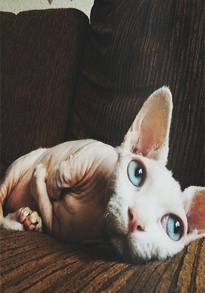
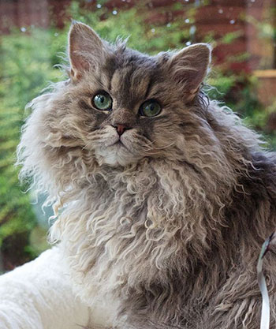
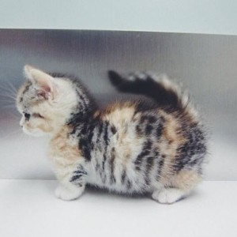
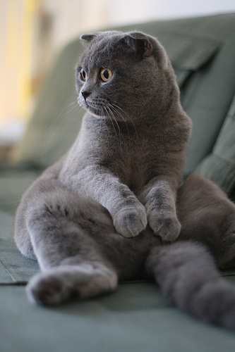
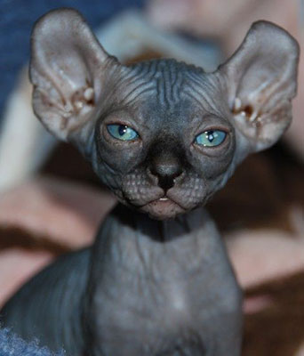
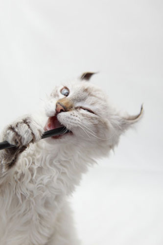
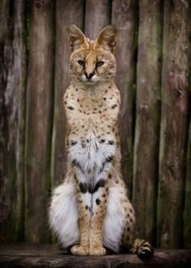
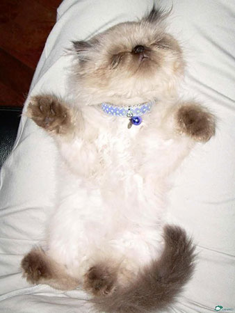
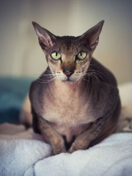
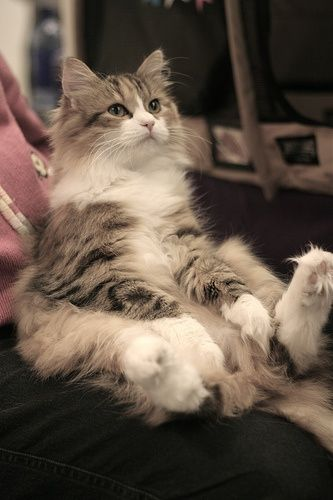

Информация о кошке:
Если решено остановить свой выбор именно на кошке породы бамбино, необходимо учесть
что котёнок будет стоить не менее 800 долларов США. А если животное племенное, то в
несколько раз дороже. Родиной породы является Америка. Именно здесь появилось
большинство самых необычных пород кошек. Ранее выведенная коротколапая порода кошек
манчкин послужила базой для создания ещё более удивительной породы бамбино. При
вязках манчкинов с канадскими сфинксами были получены бесшерстные коротколапые кошки.

Информация о кошке:
Мягкая на ощупь и напоминающая бархат волнистая короткая шерстка этих кошек так и
манит снова и снова провести рукой по спинке мурчащей красавицы. В сочетании с
пластикой движений, красивым стройным сложением, отменным здоровьем и
необременительным уходом кошки породы уральский рекс постепенно набирают
популярность. А ведь совсем недавно эта порода насчитывала всего лишь около ста
представителей.

Информация о кошке:
Эти удивительные коротконогие кошки по стилю бега издали могут быть ошибочно приняты
за хорька. А смешная манера всматриваться вдаль, садясь на задние лапки, прижимая
передние к груди, делает манчкинов похожими на сурикатов. Благодаря низкорослости за
счёт коротких лап манчкины создают впечатление маленьких кошек. Но на самом деле их
тело достигает таких же размеров, как и у кошек с нормальной длиной конечностей.
Среди манчкинов встречаются как довольно миниатюрные представители породы, вес
которых достигает в среднем 2 – 3 кг, так и «полновесные», масса тела которых может
варьировать от 3,5 до 6 кг.

Информация о кошке:
Пожалуй, какие только эмоции не вызывает эта порода как у детей, так и у взрослых!
Кто-то находит в ней схожесть с совёнком, для кого-то эта круглая мордашка напоминает
Вини-Пуха, а некоторые видят в ней милого «зайчика». Наверное, ни одна другая порода
кошек не проходила столь тернистый путь становления, от внезапной популярности, до
полного краха и нового признания. Речь идёт о скоттиш-фолдах, шотландской вислоухой
кошке.

Информация о кошке:
Казалось бы, каких только пород кошек не вывели селекционеры. И бесхвостых, и
коротконогих, карликовых и огромных. Но всегда найдётся какой – нибудь мечтатель,
который решится заняться выведением ещё более неповторимой породы «мурок». Именно
благодаря полёту фантазии селекционеров и появились сказочные создания – кошки
породы эльф.

Информация о кошке:
Изящная кошка с удивительными загнутыми назад кончиками ушей не может оставить
равнодушным ни одного любителя кошек. Интересные ушки полностью меняют выражение
кошачьей мордочки и общий вид животного в целом. Сразу возникает ассоциация, что у
кошки на голове корона либо рожки. В зависимости от воспитания из керла действительно
может получиться либо утончённая «принцесса» с хорошими манерами, либо забалованный
«чертенок».

Информация о кошке:
Кошки и коты, такой породы, как Саванна (Savannah) – это замечательные и
очаровательные создания на планете, которые своей внешностью напоминают своего же
предка, Африканского дикого сервала, только в отличие от него, Саванна немного
меньше в размере.

Информация о кошке:
Гималайская кошка поражает своей красотой. Длинная и очень густая, мягкая шерсть,
вырастающая до 12 см. Поистине бездонные ярко-голубые глаза. Окрас как у сиамской
кошки, но при этом анатомическое сходство с персидскими кошками. Откуда взялось
это «чудо»?

Информация о кошке:
Очень элегантная и утонченная голая кошка прошлась бесшумной походкой к окну и одним
легким прыжком взлетела на подоконник. Ну, просто балерина! Застыв в изящной позе и
подставляя кожу под лучи солнца, кошка стала похожа на произведение искусства. Чем не
египетская статуэтка?! Что же это за «утонченная кошачья натура»?

Информация о кошке:
Норвежская лесная кошка – полу длинношерстная кошка, очень известна в Северной
Европе. В Ногрвегии лесная кошка или как её называют Cкоггкэт, воплощает в себе
суровую и прекрасную природы страны. Она является официальной кошкой в стране. Предки
кошек Cкоггкэт росли в суровом климате, поэтому шерсть кошки имеет водонепроницаемые
и водоотталкивающие свойства. У кошки длинная двойная шерсть, большие уши и
вертлявый хвост. Окрасы у норвежских кошек разные, тем не менее, шоколадный,
циннамон и другие оттенки этих цветов не признаются. Средний вес кошки не больше
8 килограмм. Норвежская лесная кошка большая, изящная, очень игрива, энергичная
и любознательная. Кошка очень общительна, любит ласку и внимание. Норвежские коты
намного больше кошек. В среднем взрослый кот имеет вес около девяти килограмм, кошка
значительно меньше. У них сильные лапы и крепкие когти, это позволяет им
беспрепятственно лазить по деревьям.